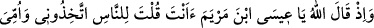
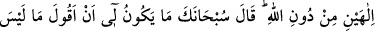
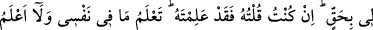
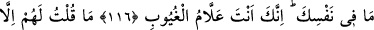
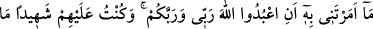
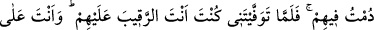
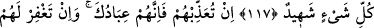
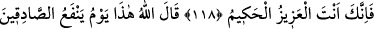
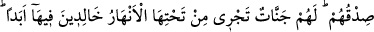
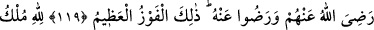
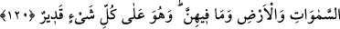
KIYAMET GÜNÜNDE
HZ. İSA’NIN
HESABA ÇEKİLMESİ
116. Allah: Ey Meryem oğlu Îsâ! İnsanlara, “Allah’ı bırakıp da beni ve anamı iki
ilah edinin” diye sen mi dedin? buyurduğu zaman o şöyle söyledi: “Hâşâ! Seni
tenzih ederim; hakkım olmayan şeyi söylemek bana yakışmaz. Hem ben söylemiş
olsaydım elbette Sen onu bilirdin. Sen benim içimdekini bilirsin, halbuki ben senin
zâtında olanı bilmem. Gizlilikleri hakkıyla bilen yalnızca sensin.
117. Ben onlara, ancak bana emrettiğini söyledim. Benim de, sizin de Rabb’iniz
olan Allah’a kulluk edin, dedim. İçlerinde bulunduğum müddetçe onlara şâhit idim.
Fakat sen beni vefât ettirince onları gözetleyen yalnız sen oldun. Sen her şeyi
hakkıyla görensin.
118. Eğer kendilerine azap edersen, şüphesiz onlar senin kullarındır. Eğer onları
bağışlarsan şüphesiz sen izzet ve hikmet sahibisin” dedi.
119. Allah buyurdu ki: Bu, doğrulara doğruluklarının fayda vereceği gündür.
Onlara içinde ebedî kalacakları, zemininden ırmaklar akan cennetler vardır. Allah
onlardan râzı olmuştur, onlar da O’ndan râzı olmuşlardır. İşte bu en büyük
başarıdır.
120. Göklerin, yerin ve bunlarda bulunan her şeyin mülkü Allah’ındır. O, her şeye